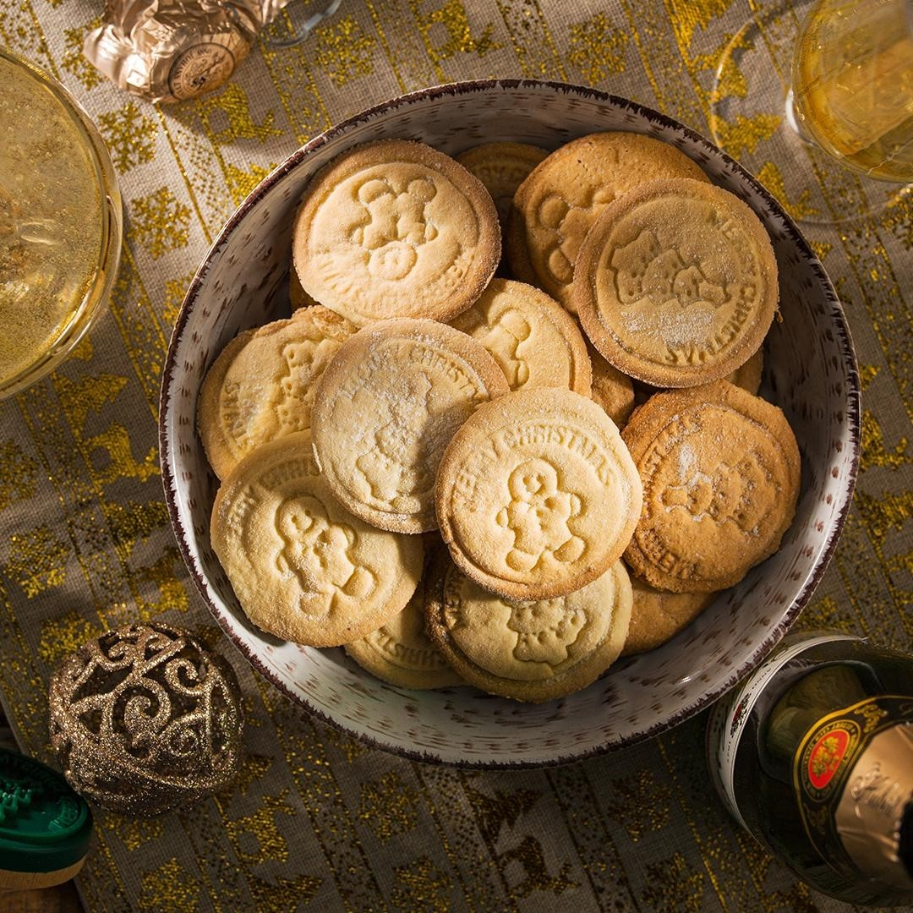

Zázvorníky podľa @komora_coopjednota — Normy Jedál
Každý si počas Vianoc užije to, na čo sa teší najviac. Ak vás lákajú sladké dobroty, určite si upečte naše zázvorníky. Sú mierne pikantné, chrumkavé a zdravé. Recept nájdete na bit.ly/zazvorniky. 💛⠀
#komoragazdin #recept #vianocny #dezert #zazvor #vianoce #zazvorniky #peceniejeradost #domacekeksiky #mnam #veselevianoce